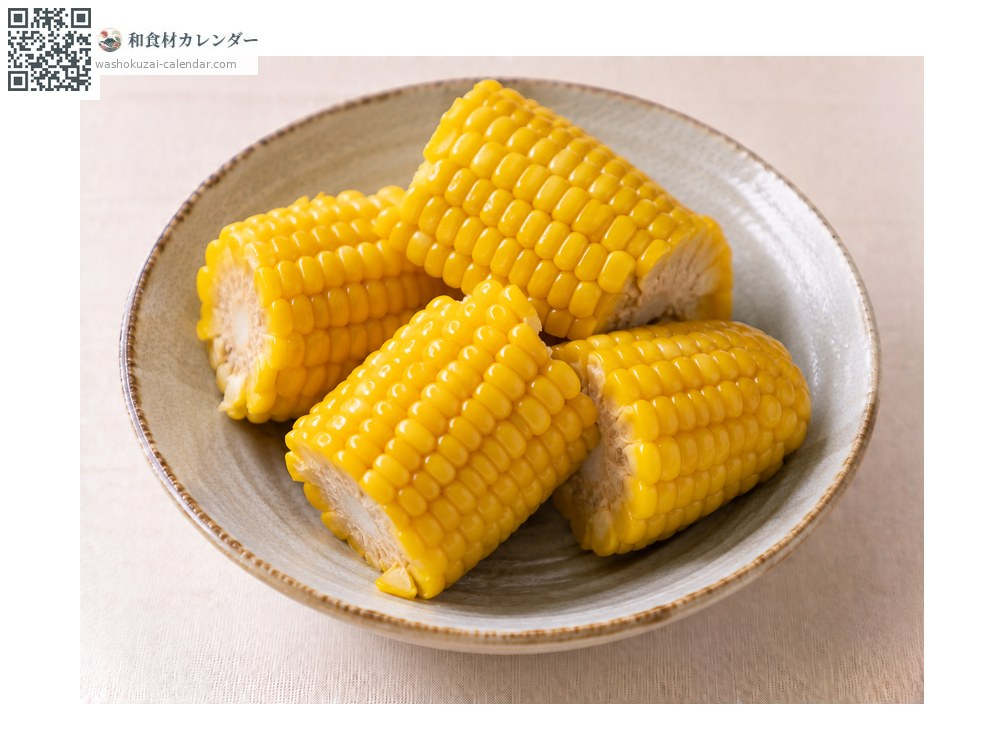
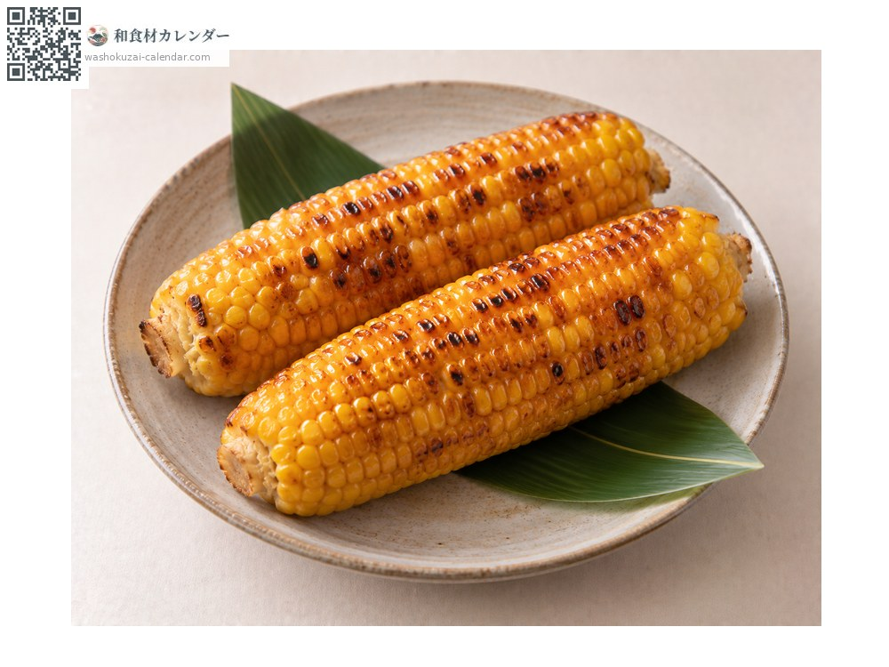
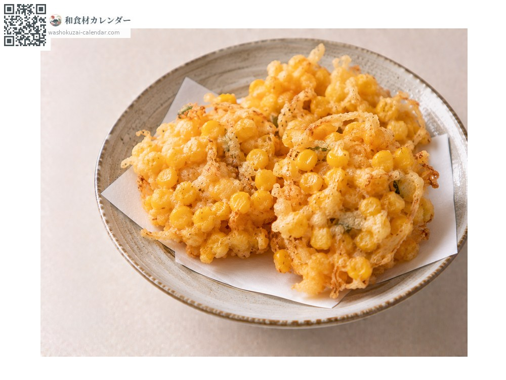
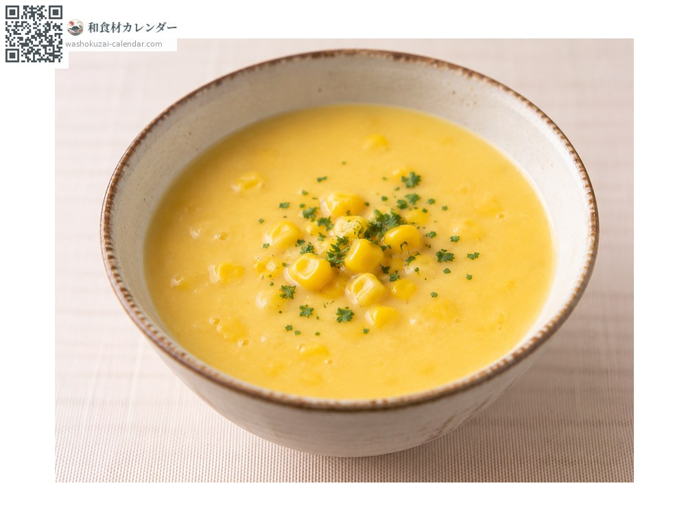

蔬菜
玉米
トウモロコシ とうもろこし toumorokoshi
別名toumorokoshi、tomorokoshi
當令時期為6月、7月、8月

當令時期
1月
2月
3月
4月
5月
6月
7月
8月
9月
10月
11月
12月
當令有供應
料理方式

水煮
連皮煮才不會水水的。

醬油烤玉米
刷上醬油燒烤。

什錦炸餅
剝下玉米粒油炸。

湯品
打成泥。
挑選方式
鬚呈褐色且濃密。外皮深綠，玉米粒飽滿排到頂端。
保存方式
採收後糖分立刻下降，當天加熱。不馬上吃就先煮好冷藏。
主要產地
小知識
鬚的數量與玉米粒的數量相同。鬚越多代表果實越飽滿。